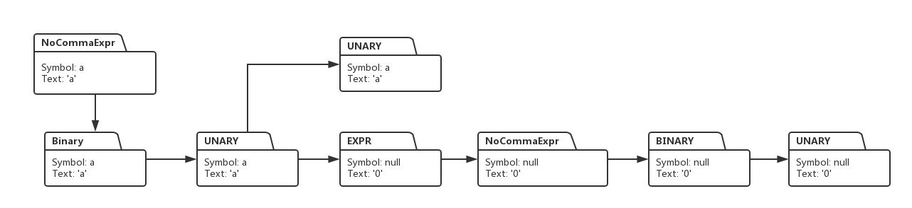
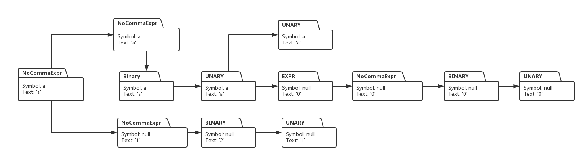
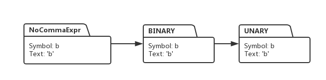
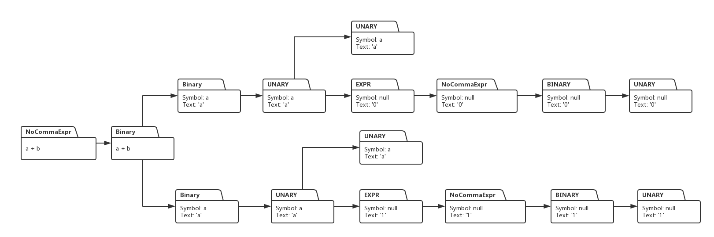
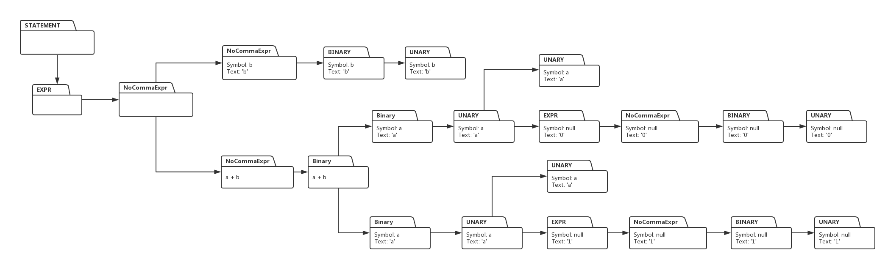

本节技术内容难度较大，请结合视频对代码的讲解和调试来理解本节内容：
用java开发编译器
一个成熟的编译器或解释器，要能够解析和执行目标语言开发的逻辑复杂的程序代码，我们用java 开发的C语言解释器，能够执行用C语言开发的较为复杂的程序时，才称得上是合格的，从本节开始，我们致力于C语言解释器的开发，要实现的目标是，我们的解释器能够正确的解析用C语言实现的快速排序功能的程序，程序样例如下：
int a[] = {10, 8, 3, 5, 2, 4, 7 , 1, 6, 9}
void quickSort(int begin, int end) {
int pivot = a[(begin + end) / 2];
int old_begin = begin;
int old_end = end;
while (begin < end) {
if (a[begin] >= pivot) {
int temp = a[begin];
a[begin] = a[end];
a[end] = temp;
end--;
} else {
begin++;
}
}
quickSort(old_begin, begin);
quickSort(end, old_end);
}
quickSort(0, 9);如果我们的解释器能够顺利的执行上面代码，实现用快速排序算法对给定数组竞选排序的功能，那表明，我们的解释器就已经有一定的成熟度了。
上面的程序中，需要对数组的相应元素进行读取或赋值，要想我们的解释器能够顺利执行上面代码，解释器需要懂得如何根据源代码指定的意图，对数组元素进行读取或赋值操作，本节的目标就是实现这一功能。完成本节功能后，我们的解释器能够正确的解析和执行下面的C语言代码：
void f() {
int b ;
int a[3];
a[0] = 1;
a[1] = 2;
b = a[0] + a[1];
}我们先从语法上看，数组的定义是如何被语法表达式说明的。
VAR_DECL -> VAR_DECL LB CONST_EXPR RB
上面的语法推导表达式用来对应数组的类型声明，其中VAR_DECL 解析 int a 这一部分语句， LB 对应左括号 ’[‘, CONST_EXPR 对应数组的长度，也就是元素个数，对应于代码就是数字3，RB 则对应右括号 ‘]’。
对数组某个元素的访问则通过下面的语法表达式实现：
UNARY -> UNARY LB EXPR RB
例如a[0], 那么表达式右边的UNARY 对应的就是数组变量名a, LB对应左括号’[‘,
EXPR对应数组0，RB对应右括号’]’.
我们看看，a[0]对应的代码执行树是怎样的，执行树的构建过程的代码实现和讲解请参看视频。
（图一：）

（图二：）
a[0] = 1, 也就是对数组元素赋值这一程序逻辑对应的执行树如下：

同理，语句a[1] = 2 所对应的执行树，结构与上面一模一样，只不过细节有点改变而已，于是生成的执行树结构如下：
（图三:）
对于求和语句 b = a[0] + a[1], 解释器先对变量b构造其解析树：
（图四：）

我们再构造a[0] + a[1] 的代码执行树：
（图五：）

上面两部分执行树结合起来，得到最终求和赋值语句的执行树：
（图六）

图二，图三，图六构成了整段代码执行树的主题部分，通过遍历这三部分执行树，执行相应动作，就可以实现本节数值赋值和读取程序所要实现的功能了。
由于本节内容技术难度较大，请结合视频的讲解和调试演示来理解本节内容。